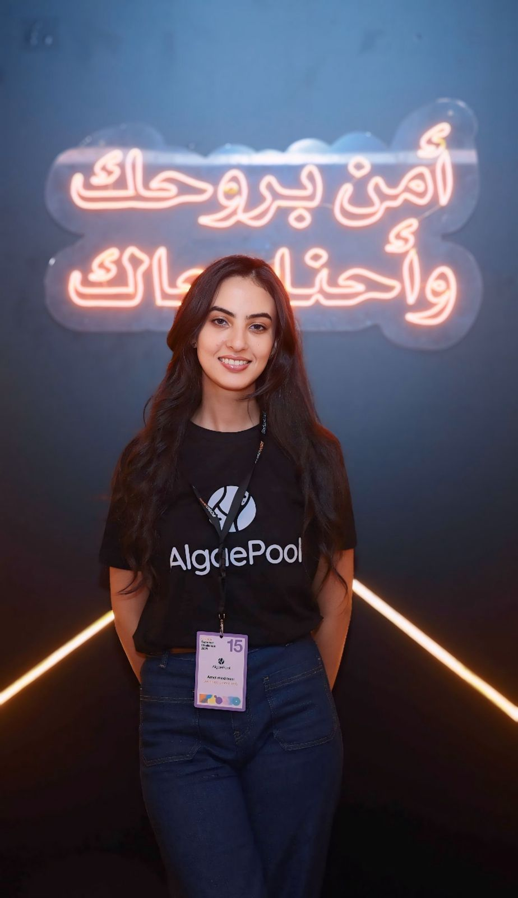

A platform to build together, verify the work and prove your impact.

PRESENTED BY
Amel Mediouni
Full-Stack Developer · ESPRIT
Host company
Orange Digital Center
Supervisor
Mr. Houssem Bouraoui
Period
July – August 2026
Roadmap
Agenda
From the problem to a working product: ten minutes, eight stops.
START
01
CONTEXT & ROLE
Host, program and my position.
02
PROBLEM & SOLUTION
Why TalentHub exists.
03
REQUIREMENTS
Functional & non-functional.
04
SCRUM & PLANNING
Method and sprint plan.
05
TECHNOLOGIES
Stack & architecture.
06
MY 4 SPRINTS
What I built, sprint by sprint.
07
CONCLUSION
Results, skills and next steps.
LIVE DEMO
The platform in action.
01
01 / Context
Context & My Role
An engineering internship focused on real needs, real users and mentoring.
Host & Program
Orange Digital Center
Orange group initiative that builds digital skills, innovation and entrepreneurship among young people in Tunisia.
IEEE Tunisia Section · Summer Internships
Mentorship program, IEEE × ODC Track: teams build projects that answer real community needs.
ESPRIT ·
Academic supervisor: Mr. Houssem Bouraoui. Period: July – August 2026.
Team & My Responsibility
DEVELOPMENT · OWNERAmel MediouniFull-Stack DeveloperI designed and built the application end-to-end: the database, the REST API, the web interface and the GitHub / GitLab integration.
4SPRINTS
5MODULES
80+ENDPOINTS
DatabaseBack-endFront-endIntegrations
Hamza Mellouli
Scrum Master
Ceremonies & backlog follow-up
Ranym Mejri
Cloud & DevOps
Deployment & CI/CD
02
02 / Problem
The Problem
Student communities launch many initiatives, but manage them across scattered tools and chats.
01Finding the right contributorsProject owners struggle to find people whose skills really match their needs.
02Informal progress trackingFollow-up relies on chats and messages, with no structured view of the work.
03No objective verificationIt is hard to prove that a task was really completed, and by whom.
04Low visibility for contributorsContributors don't see open projects, and their work is spread across repositories.
05Contributions go unrecognizedThere is no portfolio that reflects real, verified work.
02
02 / Solution
IEEE TalentHub: The Solution
One centralized platform where every contribution is tracked, verified and valued.
01
CREATE PROJECT
Owner creates it · admin approves
02
DISCOVER & APPLY
CV-based recommendations · applications
03
PLAN & ASSIGN
Tasks, sprints, milestones, Kanban
04
WORK ON GITHUB / GITLAB
Starting a task creates its branch
08
PUBLIC SHOWCASE
Projects visible without login
07
PORTFOLIO
Built from verified work
06
VERIFY & EARN XP
GitHub commit / PR evidence → XP
05
SUBMIT & REVIEW
Owner approves or asks for changes
Outcome · One Platform
Faster team buildingTraceable workVerified contributionsRecognized talent